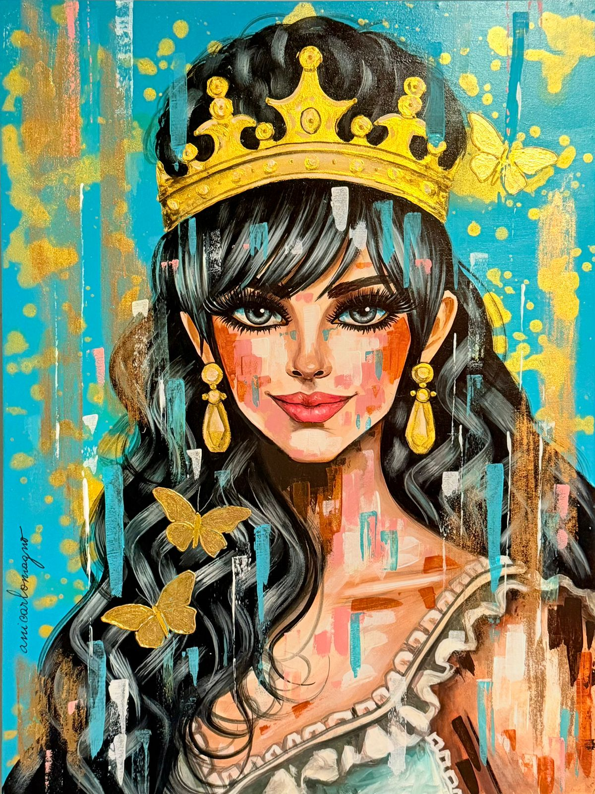
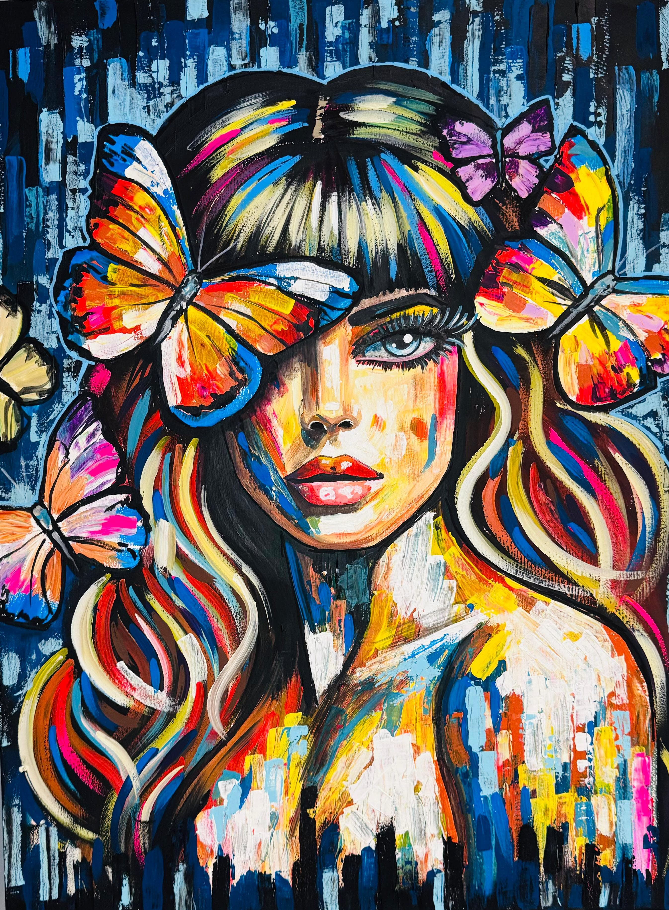
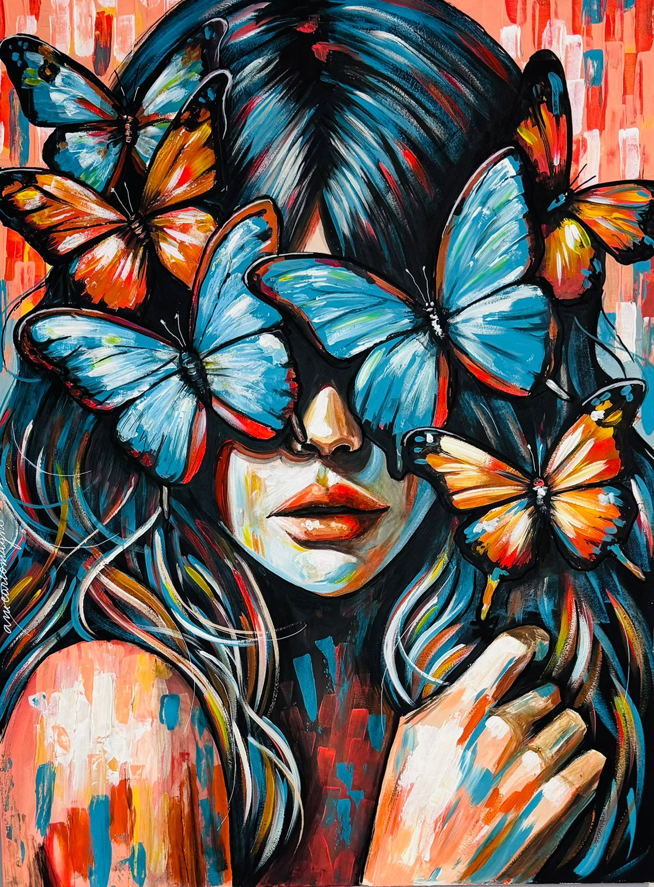
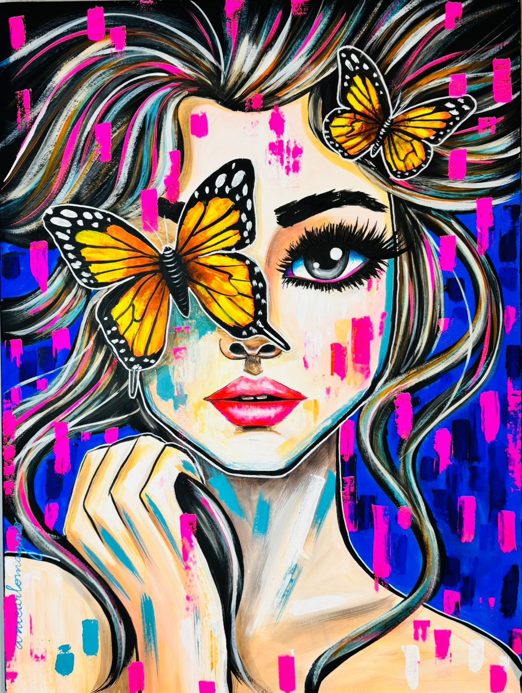
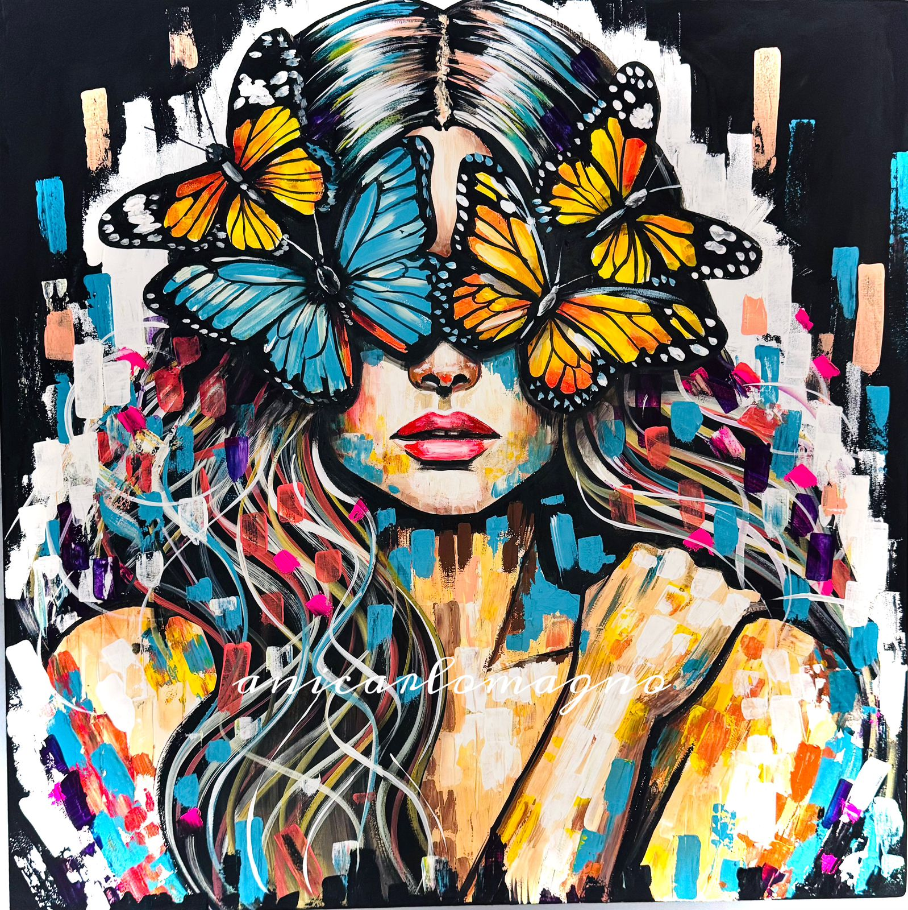
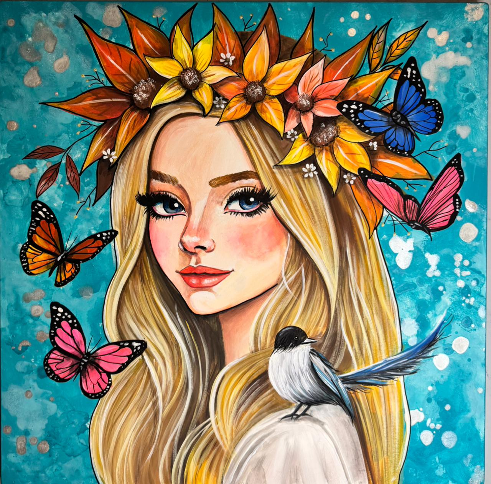
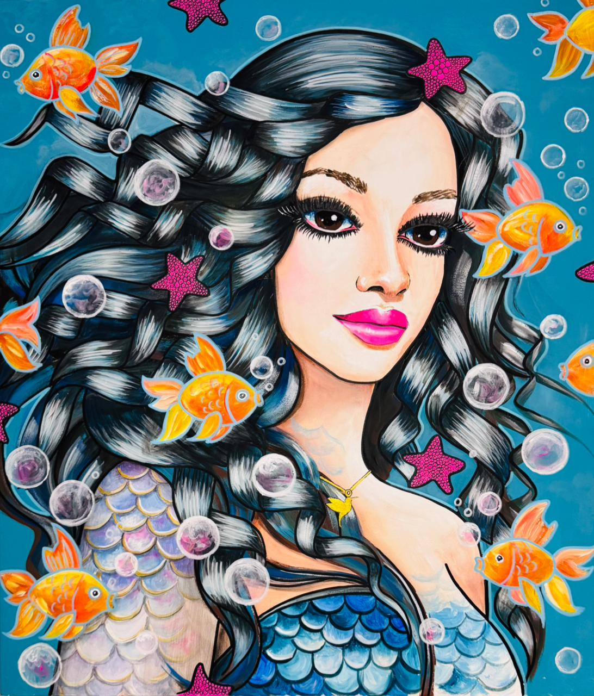
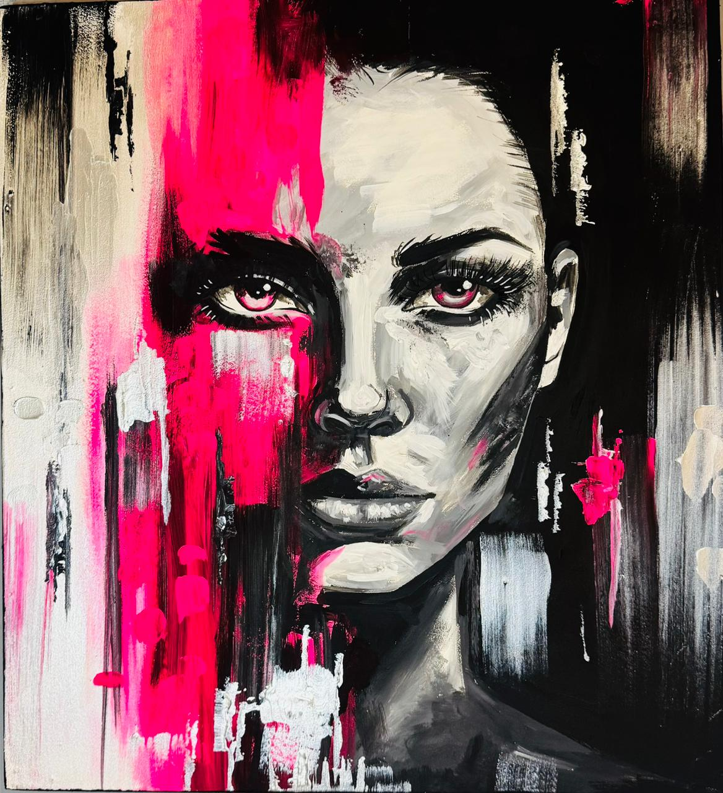

La Dama Dorada
- Técnica
- Acrílico sobre bastidor de madera, detalles en dorado
- Medida
- 80 × 60 cm
- Estado
- Disponible
Te paso el precio y cómo es el envío a todo el país.

Pinto mujeres de ojos grandes, un símbolo de mi propio camino hacia la visibilidad y la expresión de las vivencias que me han marcado.
Provisorio Tres obras elegidas para el prototipo. Ani decide cuáles van y si se agrupan por serie.




Te paso el precio y cómo es el envío a todo el país.
Provisorio [En palabras de Ani: cómo pasó de su primera forma de pintar a la actual, y qué se mantuvo: las mujeres de ojos grandes, el color.]
[Años] [Dos líneas de Ani sobre esa etapa.]


[Años] [Dos líneas de Ani sobre lo que cambió: el gesto, la espátula, la intensidad.]


Provisorio Obras elegidas por rasgos de estilo, no por fecha: Ani confirma a qué etapa pertenece cada una.
Escribime por WhatsApp y te paso precio, medidas y envío. También pinto obras y agendas personalizadas.
Prototipo C1: fondo oscuro solo detrás de cada obra, el resto en claro. Lo marcado como Provisorio lo completa Ani. Ver las variantes